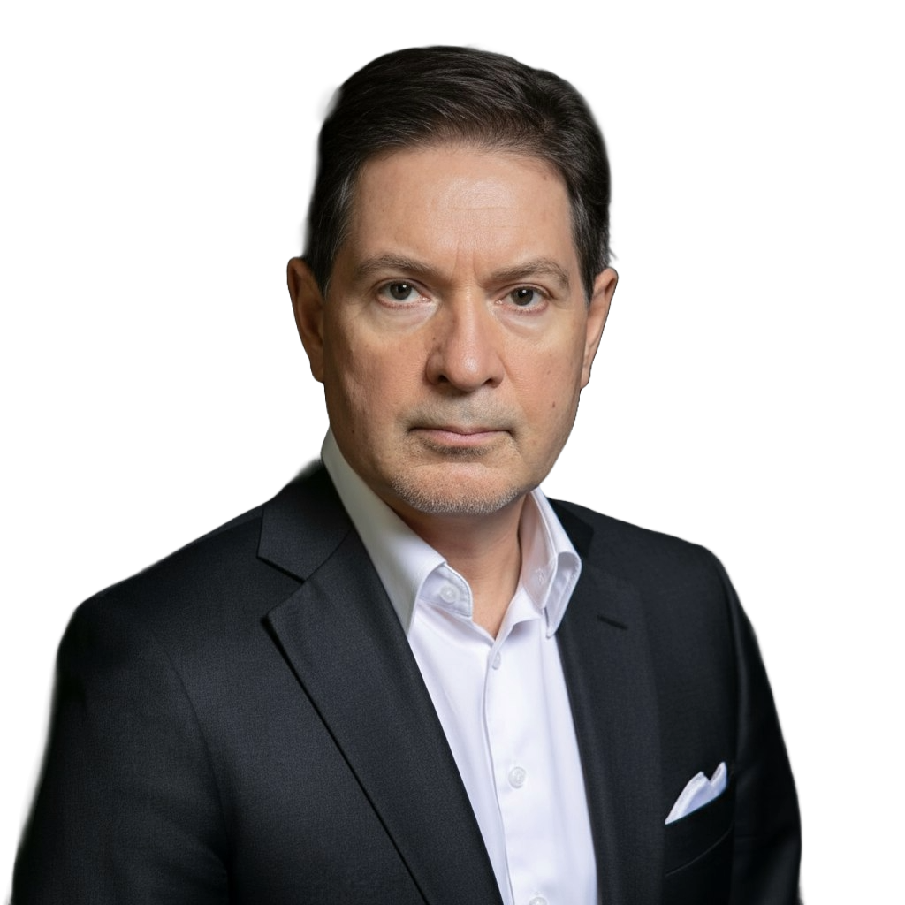
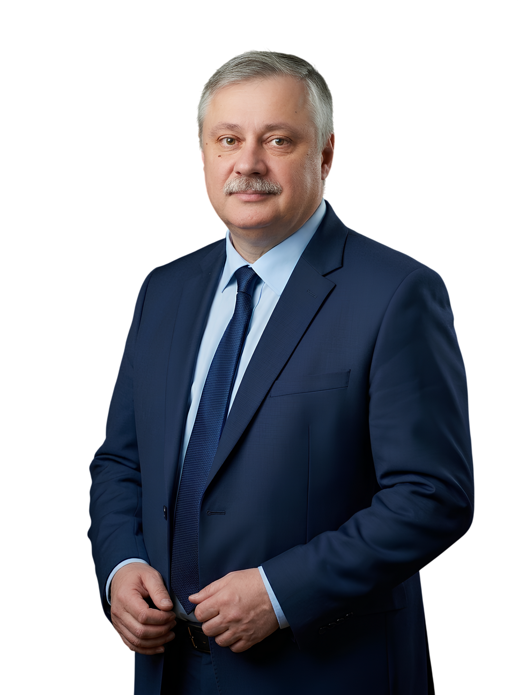
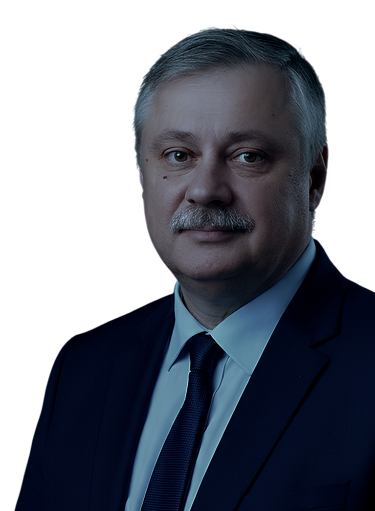
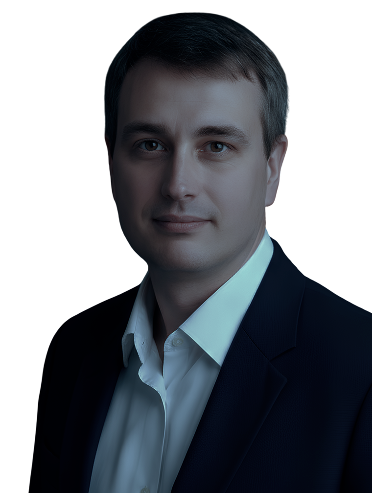
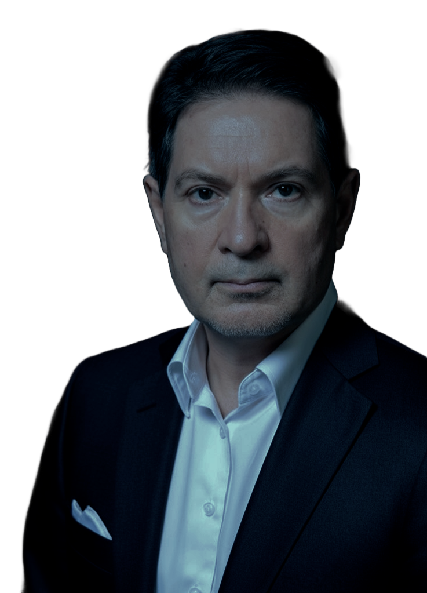

ЛИЧНО — цикл закрытых встреч с ведущими российскими аналитиками, политологами и экономистами, где в узком кругу профессионалов обсуждаются острые темы и разрабатываются совместные решения для развития бизнеса, общественной и частной жизни.
ЛИЧНО — закрытая встреча с Андреем Безруковым, Дмитрием Евстафьевым и Алексеем Пилько, 23 сентября, Москва, гостиница «Ленинградская»



Получите эксклюзивную информацию и развернутые комментарии на ваши вопросы — ЛИЧНО от выдающихся людей нашего времени!


ЛИЧНО — цикл закрытых встреч с ведущими российскими аналитиками, политологами и экономистами, где в узком кругу профессионалов обсуждаются острые темы и разрабатываются совместные решения для развития бизнеса, общественной и частной жизни.
Личное общение
Возможность прямого диалога с лидерами мнений, приближенными к власти и задающими главную повестку дня
Экспертный взгляд
Глубокий анализ основных угроз России, оценка трех сценариев развития, прогнозы будущего для страны, бизнеса и частной жизни. Все, что важно знать для стратегического планирования
Опыт и знания
Рефрейминг мышления бизнеса: экспертные рекомендации о том, как перестроить управление компанией, чтобы выжить и занять место победителя
Кулуарный формат
Общение в узком кругу профессионалов с ответственной позицией в бизнесе: для обстоятельного и безопасного обсуждения волнующих вас вопросов
Эксперты Лично 23 сентября:
Андрей Безруков
Профессор МГИМО МИД РФ. Президент, Ассоциация экспорта технологического суверенитета. Российский разведчик-нелегал, полковник СВР в отставке
Дмитрий Евстафьев
Политолог-американист, специалист по военно-политическим вопросам национальной безопасности России
Алексей Пилько
Генеральный директор, Евразийский коммуникационный центр; к. и. н.; специалист в области теории и истории международных отношений
Программа
сценарии для России и стратегии для бизнеса в новой реальности

«Проактивный сценарий России»: как действовать в условиях силовой геоэкономики и новой фазы противостояния
Осень 2026 года становится моментом выхода на новый политический цикл. Надежды на управляемое, «договорное» построение мира макрорегионов исчерпываются, а глобальная система возвращается к логике силовой геоэкономики.
В рамках доклада Дмитрий Евстафьев представит анализ того, как меняется Запад, почему кризис ЕвроАтлантики становится не только политическим, но и военно-стратегическим фактором, какие новые линии напряжения формируются вокруг России и что в этой ситуации означает проактивный сценарий для страны, государства и бизнеса.
Прямой диалог с Дмитрием Евстафьевым, ответы на вопросы участников
В программе сессии:
- Разговор лично с Дмитрием Евстафьевым
- Дискуссия и открытый микрофон, возможность задать ваши вопросы
- Фото- и автограф-сессия
Сессия будет выстроена в формате «вопрос-ответ», где спикер даст развернутые комментарии по темам, которые зададут сами участники.
Используйте возможность выйти на прямой диалог с экспертом и повлиять на повестку встречи: задайте собственные вопросы, чтобы получить точечные рекомендации и ценные инсайты для построения взвешенной стратегии развития!

Цена отказа от борьбы: исторические сценарии смирения, поражения и утраты будущего. Что будет в случае «худого мира»?
В рамках доклада Алексей Пилько представит «негативный» сценарий развития ситуации для России – не как эмоциональный прогноз или теорию заговора, а как историко-политический разбор того, что происходит со странами, которые перестают бороться за собственный сценарий будущего. Эксперт проведет развернутый анализ истории международных отношений: что происходило с государствами и народами, которые теряли волю к сопротивлению, соглашались на внешнее управление, утрачивали политическую субъектность и стратегический образ будущего.
Один из ключевых «нервов» выступления – вопрос о цене самообмана. В своем выступлении Алексей Пилько, проводя параллель между Минском, Стамбулом и «духом Анкориджа» покажет, насколько возрастают риски поражения в случае слепой веры в иллюзию переговорных пауз, которые противная сторона использует для подготовки нового витка давления.
Сессия позволит участникам посмотреть страху в глаза и ответить на вопросы: что станет с Россией, если она не выдержит противостояния с Западом – или вовсе откажется от него, если согласится на чужую рамку мира, перепутает осторожность со стратегической пассивностью, а временное затишье – с окончанием конфликта.
Прямой диалог с Алексеем Пилько, ответы на вопросы участников
В программе сессии:
- Разговор лично с Алексеем Пилько
- Дискуссия и открытый микрофон, возможность задать ваши вопросы
- Фото- и автограф-сессия
Сессия будет выстроена в формате «вопрос-ответ», где спикер даст развернутые комментарии по темам, которые зададут сами участники.
Используйте возможность выйти на прямой диалог с экспертом и повлиять на повестку встречи: задайте собственные вопросы, чтобы получить точечные рекомендации и ценные инсайты для построения взвешенной стратегии развития!

На горбу Третьей мировой или Россия в новой войне. Как принять реальность, перестроить мышление и раньше других адаптировать бизнес?
Андрей Безруков представит развернутый доклад о характере новой войны, ее долгосрочной природе и необходимости перестройки государства, экономики, управления и общественного мышления. Главный вопрос – не в том, как «переждать» этот период, а в том, как научиться в нём жить и развиваться, защищать страну, бизнес и круг своих.
Для бизнеса эта тема уже не является абстрактной, ведь геополитика для предпринимателя – это не «вбросы из новостей», а решения, от которых зависит долгосрочное планирование и устойчивость компании. Это конкретные вопросы: как выявлять риски, предотвращать финансовые разрывы и не допускать управленческих просчетов в условиях тотальной неопределенности.
Эксперт даст стратегическое видение ситуации: почему нынешнее противостояние нельзя воспринимать как краткосрочный кризис, как меняется логика угроз, почему главным объектом давления становятся не территории, а системы управления, инфраструктура, технологии и способность общества к мобилизации. И как необходимо перестроить свое мышление и модель управления компанией, чтобы адаптироваться к изменениям и выжить.
Прямой диалог с Андреем Безруковым, ответы на вопросы участников
В программе встречи:
- Разговор лично с Андреем Безруковым, развернутые комментарии «без купюр» от ведущего эксперта по внешней политике
- Дискуссия и открытый микрофон, возможность задать Ваши вопросы
- Вечерний фуршет с напитками
- Фото- и автограф-сессия
Сессия будет выстроена в формате «вопрос-ответ», где спикер даст развернутые комментарии по темам, которые зададут сами участники.
Используйте возможность выйти на прямой диалог с экспертом и повлиять на повестку встречи: задайте собственные вопросы, чтобы получить точечные рекомендации и ценные инсайты для построения взвешенной стратегии развития!
Станьте частью закрытого клуба экспертов!
Участие во встрече платное! После регистрации менеджер свяжется с Вами и вышлет подробные варианты участия во встрече!
23 сентября Москва ● Гостиница ЛенинградскаяМесто проведения:
Москва, Каланчёвская ул., 21/40
Гостиница «Ленинградская»
По вопросам участия:
+7 (939) 999-86-57
n.shipina@imperia-mail.ru